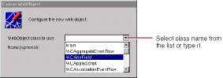

PATH
Documentation > WebObjects 4.5 >
Tools and Techniques
Custom WebObjects
You use custom WebObjects to implement reusable components (see
Reusable Components
for more details).
To create a custom WebObject:
-
Click
 in the toolbar.
in the toolbar.
-
In the panel that appears, specify the element class.

The WebObject Class combo box allows you to type the class name or select it from the components listed in the pull-down list. This lists all components that are in the current project and frameworks. For example, the WOAnyField and WOAppleScript components listed above are defined in the WOExtensions framework, which is included in your project by default.
If WebObjects Builder recognizes the element class, it automatically displays its attributes in the inspector. Otherwise, use the inspector to add them (see
Binding Elements
).
The WOExtensions palette (see
Palettes
) contains several pre-defined custom WebObjects elements you can use in a component.
© 1999 Apple Computer, Inc. – (Last Updated July 27 99)